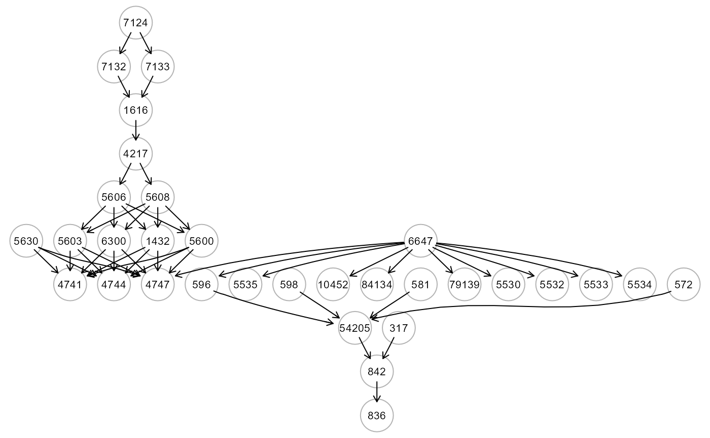
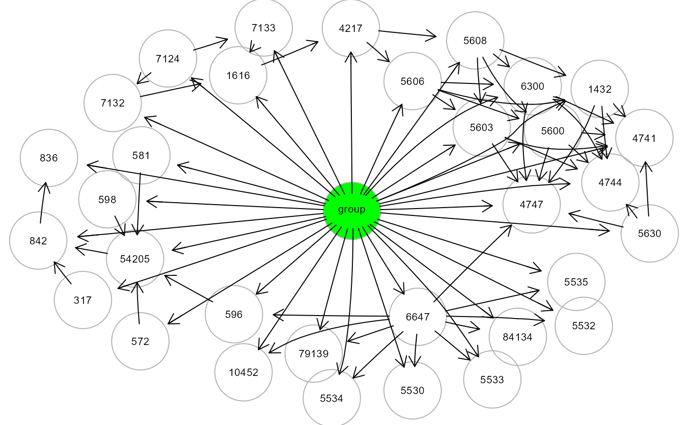
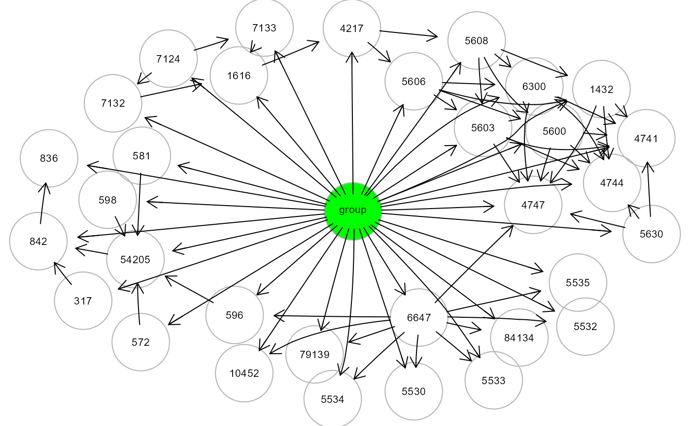

The function insert additional nodes to a graph object.
Among the node types, additional source or sink nodes can be added.
Source nodes can represent: (i) data variables; (ii) a group variable;
(iii) latent variables (LV). Vice versa, sink nodes represent the levels
of a categorical outcome variable and are linked with all graph nodes.
Moreover, mapGraph() can also create a new graph object starting
from a compact symbolic formula.
Arguments
- graph
An igraph object.
- type
A character value specifying the type of mapping. Five types can be specified.
"source", source nodes are linked to sink nodes of the graph.
"group", an additional group source node is added to the graph.
"outcome", additional c=1,2,...,C sink nodes are added to the graph.
"LV", additional latent variable (LV) source nodes are added to the graph.
"clusterLV", a series of clusters for the data are computed and a different LV source node is added separately for each cluster.
- C
the number of labels of the categorical sink node (default = NULL).
- LV
The number of LV source nodes to add to the graph. This argument needs to be specified when
type = "LV". Whentype = "clusterLV"the LV number is defined internally equal to the number of clusters. (default = NULL).- f
A formula object (default = NULL). A new graph object is created according to the specified formula object.
- verbose
If TRUE disply the mapped graph (default = FALSE)
- ...
Currently ignored.
Author
Mario Grassi mario.grassi@unipv.it
Examples
# Load Amyotrophic Lateral Sclerosis (ALS)
ig<- alsData$graph; gplot(ig)

# ... map source nodes to sink nodes of ALS graph
ig1 <- mapGraph(ig, type = "source"); gplot(ig1, l="dot")
 # ... map group source node to ALS graph
ig2 <- mapGraph(ig, type = "group"); gplot(ig2, l="fdp")

# ... map outcome sink (C=2) to ALS graph
ig3 <- mapGraph(ig, type = "outcome", C=2); gplot(ig3, l="fdp")
# ... map LV source nodes to ALS graph
ig4 <- mapGraph(ig, type = "LV", LV = 3); gplot(ig4, l="fdp")
# ... map LV source nodes to the cluster nodes of ALS graph
ig5 <- mapGraph(ig, type = "clusterLV"); gplot(ig5, l="dot")
#> modularity = 0.5588502
#>
#> Community sizes
#> 3 1 4 2
#> 4 8 9 11
#>
# ... map group source node to ALS graph
ig2 <- mapGraph(ig, type = "group"); gplot(ig2, l="fdp")

# ... map outcome sink (C=2) to ALS graph
ig3 <- mapGraph(ig, type = "outcome", C=2); gplot(ig3, l="fdp")
# ... map LV source nodes to ALS graph
ig4 <- mapGraph(ig, type = "LV", LV = 3); gplot(ig4, l="fdp")
# ... map LV source nodes to the cluster nodes of ALS graph
ig5 <- mapGraph(ig, type = "clusterLV"); gplot(ig5, l="dot")
#> modularity = 0.5588502
#>
#> Community sizes
#> 3 1 4 2
#> 4 8 9 11
#>
 # ... create a new graph with the formula variables
formula <- as.formula("z4747 ~ z1432 + z5603 + z5630")
ig6 <- mapGraph(f=formula); gplot(ig6)
# ... create a new graph with the formula variables
formula <- as.formula("z4747 ~ z1432 + z5603 + z5630")
ig6 <- mapGraph(f=formula); gplot(ig6)